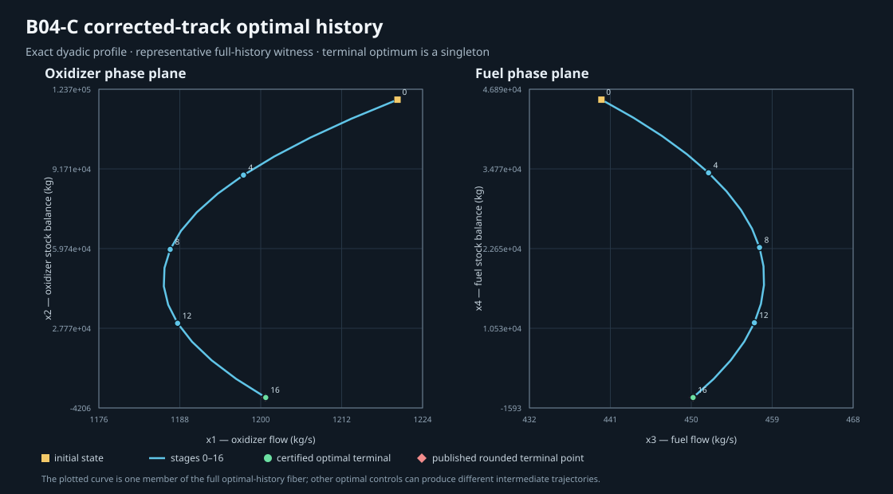

Research dossier · external exact mathematical check · separate from registered algorithm results
B04-C corrected-track mathematical dossier
An independent Python checker audits the owner-authorized corrected-track model using exact represented-dyadic arithmetic. This research-only report is listed separately from compiled algorithm results; it has not passed the prepared Strategy A verifier boundary and does not satisfy #531 or #8.
30.89913603001440 and a 16-dimensional description of the minimizing control histories, with an affine lift into 84 joint state/control coordinates. The registry does not currently publish this as a verified complete family. within pre-registered confirmation band.
What was checked
- Sixteen exact stage transitions and all 100 hard control and phase inequalities.
- An exactly feasible zero-multiplier KKT witness with zero gradient in all sixteen controls for the stated convex represented-dyadic profile.
- The rounded published terminal point is reachable inside its coordinate-wise rounding box; exact plane residuals are retained separately from the optimum proof.
- An external mathematical derivation of the minimizing control histories and their affine state lift. This dossier does not provide a registered family payload, verifier receipt, or public Strategy A query path.
Model and evidence boundary
Inputs that enter through binary64 are treated as the exact dyadic values represented by their bits, following ADR 0003. The source variant is B04-c-exact-dyadic-20261102, based on A39/A01/A40. It is neither B04-historical nor b04-reference-v1, and makes no historical reproduction claim. The unresolved A40 unit convention remains open.
The confirmation band is preserved at |J* - 30.899| <= 0.0005. The published rounded linear value is 30.899; the four nonlinear table rows remain 368.45, 41.855, 65.874 and 7.922. This corrected-track result does not explain or reproduce those nonlinear rows.
The research record describes a 16D H-polytope and affine state lift for the derived minimizing histories. The repository's compiled registry has not verified or exposed that relation as a complete family, and does not currently support its membership or projection queries. This page plots one member only; other geometric projections are not claimed.
Reproduce and inspect
The builder and independent checker are available at the captured source commit. Run python docs/research/tools/build_b04_c_exact_fiber.py, then python docs/research/tools/finalize_b04_c_exact_fiber.py. The finalizer rebuilds the record, checks the proof, renders both phase planes and validates this research bundle. This route appears in the report index under Research Evidence and does not constitute compiled verifier admission.
- Machine-readable exact record
- Independent verification result
- Full profile notes and assumptions
- Evidence manifest and source hashes
This is a fixed-profile research result. It does not by itself establish a production Strategy A prepared-request verification path or extend Strategy B coverage.